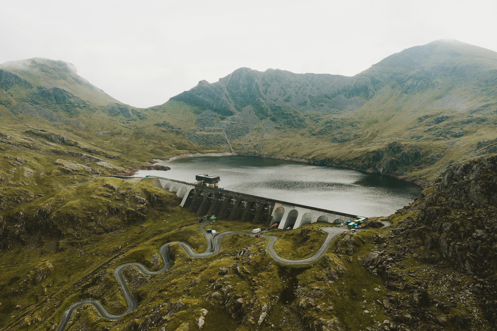

Monitoramento Inteligente contra Enchentes.

Enchentes causam perdas humanas e materiais todos os anos em áreas urbanas vulneráveis.
A falta de monitoramento em tempo real agrava a situação e impede respostas rápidas.
Tecnologias

Enchentes causam perdas humanas e materiais todos os anos em áreas urbanas vulneráveis.
A falta de monitoramento em tempo real agrava a situação e impede respostas rápidas.
Analise de Big Data
A Rivur transforma dados em visualizações claras e vibrantes, mostrando exatamente o que está acontecendo em cada região.
- 01 Coleta de Dados Ambientais em Tempo Real.
- 02 Integração com Dados Históricos.
- 03 Análise Preditiva com Inteligência Artificial.
- 04 Visualização e Alerta.